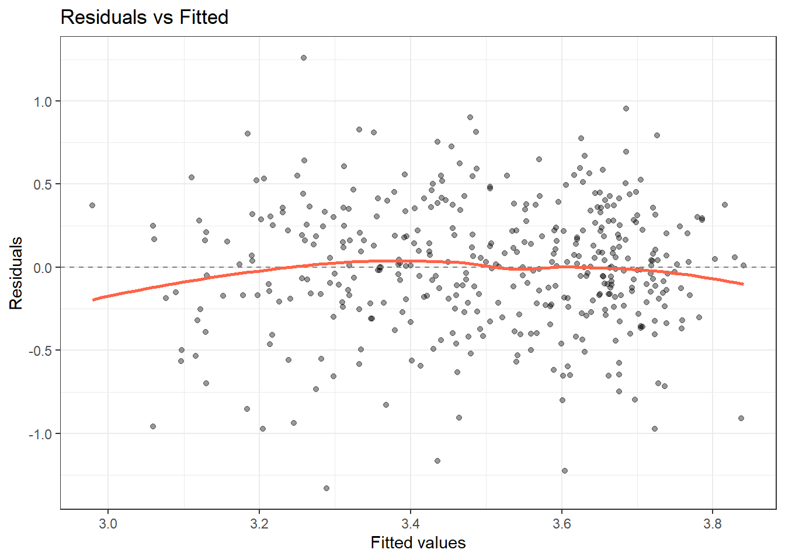
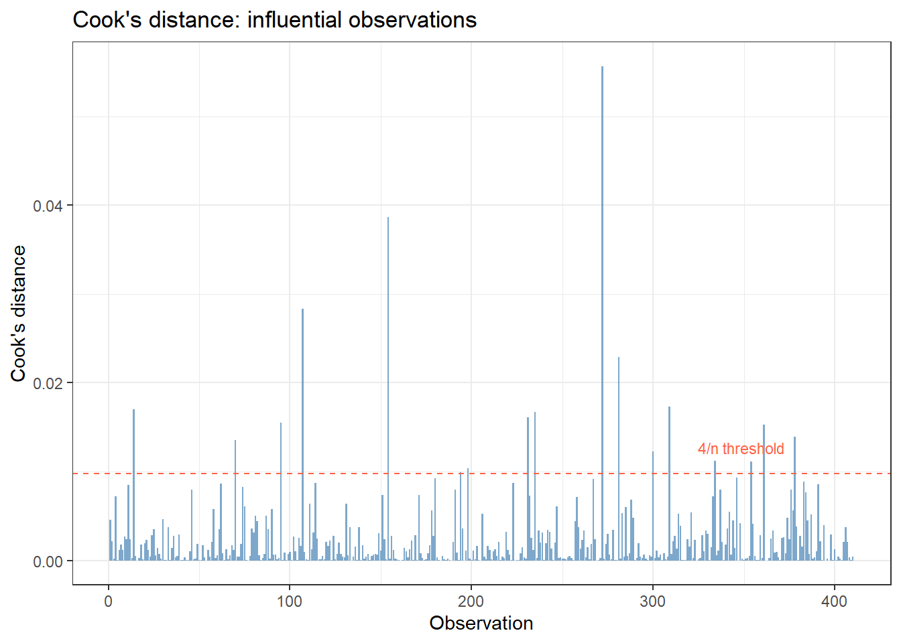
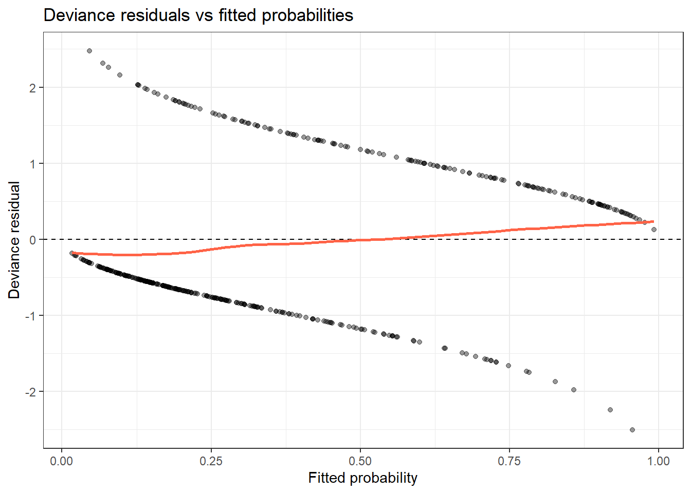
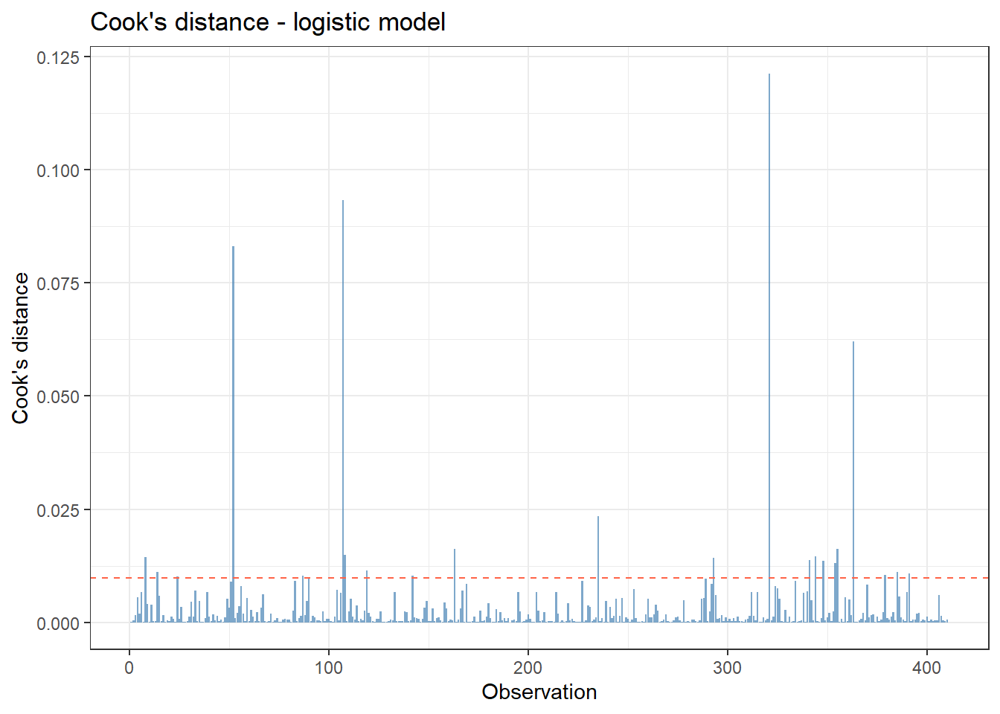
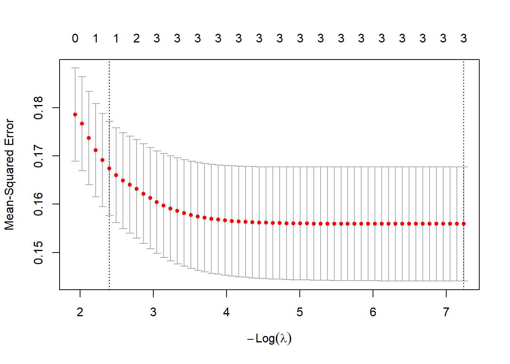
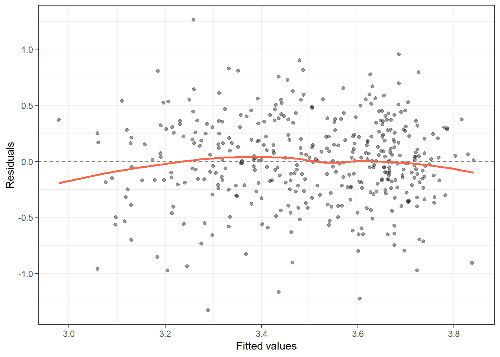

pbc <- survival::pbc %>%
as_tibble() %>%
janitor::clean_names() %>%
filter(!is.na(albumin), !is.na(bili), !is.na(protime), !is.na(stage)) %>%
mutate(
log_bili = log(bili),
log_proto = log(protime),
stage = factor(stage, levels = 1:4, labels = paste("Stage", 1:4))
)
fit <- lm(albumin ~ log_bili + log_proto + stage, data = pbc)13 Model Building and Diagnostics
ImportantBefore You Start
This session covers model selection and diagnostics for regression models. Complete Linear Regression, Multiple Regression, and Logistic Regression before starting here.
13.1 When Do You Use This?
You have fitted a regression model, but before trusting its conclusions you need to verify that the model is appropriate: are the assumptions met? Are there influential outliers? Is the model overfitted? Model building and diagnostics are the quality-control steps between fitting a model and reporting it.
13.2 Learning Objectives
After completing this session you will be able to:
- Apply a systematic model-building strategy for linear and logistic regression
- Diagnose assumption violations using residual plots, QQ-plots, and leverage diagnostics
- Detect influential observations with Cook’s distance and leverage statistics
- Evaluate model performance: \(R^2\), AIC, cross-validation RMSE
- Apply penalised regression (ridge, lasso) when variable selection is needed
13.3 Background: A Model-Building Framework
Good regression modelling is a structured process, not a p-value fishing expedition.
Steps:
- Define the research question - outcome, predictors, and target population
- Explore the data - distributions, missingness, correlations
- Pre-specify the model - driven by domain knowledge, not by initial results
- Fit and assess assumptions - residuals, influential points
- Compare models - use AIC/BIC or likelihood ratio tests, not step-wise
- Validate - internal (bootstrap) or external (hold-out data)
- Report - all results, including assumption checks
The selection problem: Choosing predictors based on their p-values from the same data you use to estimate coefficients inflates the apparent significance and overfits the model. Pre-specification and penalised methods address this.
13.4 Example 1: Linear Regression Diagnostics (PBC)
13.4.1 Fit a Model
13.4.2 Residual Diagnostics
par(mfrow = c(2, 2))
plot(fit)
par(mfrow = c(1, 1))Reading the four plots:
- Residuals vs Fitted: Should be a horizontal cloud around zero. Any pattern suggests non-linearity or omitted predictors.
- Normal QQ: Residuals should follow the diagonal. Systematic deviation from the line indicates non-normality.
- Scale-Location (v|residuals| vs fitted): Should be flat. An upward slope indicates heteroscedasticity.
- Residuals vs Leverage: Points in the upper/lower right are high-leverage and high-residual (influential). Cook’s distance contours (dashed lines) mark the boundary.
13.4.3 Augmenting Data with Diagnostics
diag_df <- augment(fit) %>%
mutate(.row = row_number())
# High Cook's distance
diag_df %>%
arrange(desc(.cooksd)) %>%
select(.row, albumin, log_bili, .fitted, .resid, .cooksd, .hat) %>%
head(10)# A tibble: 10 × 7
.row albumin log_bili .fitted .resid .cooksd .hat
<int> <dbl> <dbl> <dbl> <dbl> <dbl> <dbl>
1 272 2.93 -0.693 3.84 -0.908 0.0557 0.0530
2 154 2.56 0.875 3.46 -0.904 0.0387 0.0383
3 107 4.03 -0.511 3.66 0.369 0.0284 0.136
4 281 2.1 2.88 3.06 -0.959 0.0229 0.0209
5 309 2.75 -0.916 3.72 -0.973 0.0174 0.0155
6 14 2.27 -0.223 3.44 -1.17 0.0170 0.0107
7 235 4.16 2.56 3.33 0.828 0.0167 0.0205
8 231 1.96 1.22 3.29 -1.33 0.0161 0.00784
9 95 2.64 2.86 3.30 -0.658 0.0155 0.0295
10 361 4.52 1.48 3.26 1.26 0.0153 0.00825diag_df %>%
ggplot(aes(x = .row, y = .cooksd)) +
geom_col(fill = "steelblue", alpha = 0.7) +
geom_hline(yintercept = 4 / nrow(pbc), linetype = "dashed", color = "tomato") +
labs(title = "Cook's distance - influential observations",
x = "Observation", y = "Cook's distance") +
theme_bw()
Points above the 4/n threshold merit investigation. They may be data errors or genuinely extreme but valid cases.
13.4.4 Checking Multicollinearity
vif(fit) GVIF Df GVIF^(1/(2*Df))
log_bili 1.180386 1 1.086456
log_proto 1.188617 1 1.090237
stage 1.188763 3 1.02923813.4.5 Testing for Heteroscedasticity
ncvTest(fit) # Breusch-Pagan test from car packageNon-constant Variance Score Test
Variance formula: ~ fitted.values
Chisquare = 6.050681, Df = 1, p = 0.013901A significant p-value indicates heteroscedasticity. Consider transforming Y or using heteroscedasticity-consistent (HC) standard errors.
13.5 Example 2: Logistic Regression Diagnostics (PBC Mortality)
pbc2 <- pbc %>%
mutate(
died = as.integer(status == 2),
sex = factor(sex, levels = c("f", "m"), labels = c("Female", "Male"))
) %>%
filter(!is.na(died))
fit_log <- glm(died ~ log_bili + log_proto + albumin + stage,
data = pbc2, family = binomial)13.5.1 Residual and Influence Diagnostics
diag_log <- augment(fit_log, type.predict = "response")
# Deviance residuals vs fitted probabilities
diag_log %>%
ggplot(aes(x = .fitted, y = .resid)) +
geom_point(alpha = 0.4, size = 1.5) +
geom_hline(yintercept = 0, linetype = "dashed") +
geom_smooth(se = FALSE, color = "tomato") +
labs(title = "Deviance residuals vs fitted probabilities",
x = "Fitted probability", y = "Deviance residual") +
theme_bw()`geom_smooth()` using method = 'loess' and formula = 'y ~ x'
diag_log %>%
mutate(row = row_number()) %>%
ggplot(aes(x = row, y = .cooksd)) +
geom_col(fill = "steelblue", alpha = 0.7) +
geom_hline(yintercept = 4 / nrow(pbc2), linetype = "dashed", color = "tomato") +
labs(title = "Cook's distance - logistic model",
x = "Observation", y = "Cook's distance") +
theme_bw()
13.5.2 AIC Comparison: Model Selection Without P-value Fishing
m1 <- glm(died ~ log_bili, data = pbc2, family = binomial)
m2 <- glm(died ~ log_bili + log_proto, data = pbc2, family = binomial)
m3 <- glm(died ~ log_bili + log_proto + albumin, data = pbc2, family = binomial)
m4 <- glm(died ~ log_bili + log_proto + albumin + stage, data = pbc2, family = binomial)
AIC(m1, m2, m3, m4) %>%
tibble::rownames_to_column("model") %>%
arrange(AIC) model df AIC
1 m4 7 415.9624
2 m3 4 417.9369
3 m2 3 418.5679
4 m1 2 446.7112Choose the model with the lowest AIC that aligns with your pre-specified hypotheses.
13.6 Example 3: Penalised Regression (Lasso)
When you have many candidate predictors and want data-driven selection, lasso (L1 penalisation) shrinks some coefficients to exactly zero.
library(glmnet)Warning: package 'glmnet' was built under R version 4.4.3Loading required package: Matrix
Attaching package: 'Matrix'The following objects are masked from 'package:tidyr':
expand, pack, unpackLoaded glmnet 4.1-10pbc_mat <- pbc %>%
select(albumin, log_bili, log_proto, platelet, bili, protime) %>%
drop_na()
X <- model.matrix(albumin ~ log_bili + log_proto + platelet, data = pbc_mat)[, -1]
y <- pbc_mat$albumin
# Cross-validated lasso
set.seed(2024)
cv_lasso <- cv.glmnet(X, y, alpha = 1)
plot(cv_lasso)
# Coefficients at the optimal lambda
coef(cv_lasso, s = "lambda.min")4 x 1 sparse Matrix of class "dgCMatrix"
lambda.min
(Intercept) 4.4690606855
log_bili -0.1223933328
log_proto -0.4405941333
platelet 0.0005532384Lasso selects predictors by shrinking small coefficients to zero. It is useful for exploratory modelling with many candidates, but coefficients are biased (shrunk toward zero) and should not be interpreted as effect estimates without post-selection inference.
13.7 Where to Find Data Like This
PBC dataset: survival::pbc - multiple correlated continuous and categorical predictors; good for demonstrating overfitting, VIF, and model selection.
MASS::Boston (or updated BostonHousing2 from mlbench): Housing data with correlated predictors, commonly used for penalised regression examples.
Any of your prior datasets - model building and diagnostics are always applied to real data from a research question, not synthetic datasets.
13.8 What Can Go Wrong
Stepwise selection Automated forward/backward stepwise selection based on p-values produces overfit models with inflated effect estimates and incorrect standard errors. Avoid unless used purely for exploration, not inference.
Ignoring assumption violations A model that violates assumptions (non-linearity, heteroscedasticity, non-normality of residuals) gives incorrect CIs and p-values. Check diagnostics before reporting.
Removing outliers without justification Influential observations may be genuine extreme cases, not errors. Removing them without documenting and justifying the decision is a form of selective reporting.
Confusing in-sample fit with predictive performance \(R^2\) and AIC measure in-sample fit. A model that fits the data well may not predict new observations accurately (overfitting). Use cross-validation or a hold-out test set to estimate predictive performance.
13.9 Exercises
13.9.1 Exercise 1 (Guided): Full Diagnostic Workflow
Fit lm(albumin ~ log_bili + log_proto + stage, data = pbc) and:
- Produce the four standard diagnostic plots.
- Identify the top 5 observations by Cook’s distance. Are they plausible outliers?
- Check VIF. Is multicollinearity a concern?
- Run
ncvTest(). Is heteroscedasticity detected?
TipExercise 1: Solution
fit_ex <- lm(albumin ~ log_bili + log_proto + stage, data = pbc)
# 1. Diagnostic plots
par(mfrow = c(2, 2)); plot(fit_ex); par(mfrow = c(1, 1))
# 2. Top Cook's distances
augment(fit_ex) %>%
mutate(.row = row_number()) %>%
arrange(desc(.cooksd)) %>%
select(.row, albumin, log_bili, .resid, .cooksd) %>%
head(5)# A tibble: 5 × 5
.row albumin log_bili .resid .cooksd
<int> <dbl> <dbl> <dbl> <dbl>
1 272 2.93 -0.693 -0.908 0.0557
2 154 2.56 0.875 -0.904 0.0387
3 107 4.03 -0.511 0.369 0.0284
4 281 2.1 2.88 -0.959 0.0229
5 309 2.75 -0.916 -0.973 0.0174# 3. VIF
vif(fit_ex) GVIF Df GVIF^(1/(2*Df))
log_bili 1.180386 1 1.086456
log_proto 1.188617 1 1.090237
stage 1.188763 3 1.029238# 4. Heteroscedasticity test
ncvTest(fit_ex)Non-constant Variance Score Test
Variance formula: ~ fitted.values
Chisquare = 6.050681, Df = 1, p = 0.01390113.9.2 Exercise 2 (Semi-guided): AIC Model Selection for Logistic Regression
Using pbc2, fit four logistic models predicting mortality, adding one predictor at a time. Choose the best model by AIC. Then check Cook’s distance for the chosen model.
TipExercise 2: Solution
a1 <- glm(died ~ log_bili, data = pbc2, family = binomial)
a2 <- glm(died ~ log_bili + albumin, data = pbc2, family = binomial)
a3 <- glm(died ~ log_bili + albumin + log_proto, data = pbc2, family = binomial)
a4 <- glm(died ~ log_bili + albumin + log_proto + stage, data = pbc2, family = binomial)
AIC(a1, a2, a3, a4) %>% tibble::rownames_to_column() %>% arrange(AIC) rowname df AIC
1 a4 7 415.9624
2 a3 4 417.9369
3 a2 3 443.5458
4 a1 2 446.7112# Cook's for best model
augment(a4, type.predict = "response") %>%
arrange(desc(.cooksd)) %>%
head(5)# A tibble: 5 × 11
died log_bili albumin log_proto stage .fitted .resid .hat .sigma .cooksd
<int> <dbl> <dbl> <dbl> <fct> <dbl> <dbl> <dbl> <dbl> <dbl>
1 0 0.588 3.24 2.89 Stage 2 0.956 -2.50 0.0361 0.992 0.121
2 0 -0.511 4.03 2.84 Stage 1 0.553 -1.27 0.276 0.997 0.0934
3 1 1.79 3.7 2.36 Stage 1 0.257 1.65 0.146 0.996 0.0831
4 1 1.99 3.52 2.41 Stage 1 0.379 1.39 0.179 0.997 0.0621
5 0 2.56 4.16 2.48 Stage 3 0.858 -1.98 0.0258 0.995 0.0234
# ℹ 1 more variable: .std.resid <dbl>13.9.3 Exercise 3 (Open-ended)
Take a model from your own research and apply the full diagnostic workflow: residual plots, QQ-plot, influence analysis, VIF. Write a one-paragraph Supplementary Methods section documenting your model-checking process and how you handled any issues found.
13.10 Comprehension Check
- The Residuals vs Fitted plot shows a clear U-shape. What does this indicate, and how should you fix it?
- One observation has Cook’s distance = 0.8 (the threshold 4/n = 0.01). Should you automatically remove it?
- All VIFs are 1.1 except one predictor that has VIF = 9.2. What does this mean, and what are your options?
- You compare three models with AIC: 312, 308, 307. Which should you prefer?
- A lasso model with 20 candidate predictors shrinks 14 coefficients to zero, leaving 6 non-zero predictors. Can you interpret those 6 coefficients as the “true” effects?
NoteAnswers
- A U-shape indicates non-linearity; the linear model misses a curved relationship. Check whether X needs to be log-transformed, squared, or modelled with a spline. You can also try a LOESS smoother on the data to visualise the true shape.
- No; influential observations should be investigated, not automatically removed. Check whether the observation is a data entry error (correct it) or a genuinely extreme but valid case (keep it and report sensitivity analyses with and without that observation).
- VIF = 9.2 for one predictor indicates it is highly collinear with other predictors. Its coefficient estimate is unreliable (large SE, may flip sign). Options: (1) remove the collinear predictor if it is not the predictor of primary interest; (2) combine correlated predictors into a composite score; (3) use ridge regression.
- The third model (AIC = 307) is preferred; it has the lowest AIC, indicating the best balance of fit and complexity. However, the difference from model 2 (AIC = 308) is only 1, which is not a meaningful improvement. Models within 2 AIC units of the minimum are considered roughly equivalent.
- No. Lasso coefficients are biased toward zero by the penalty. After lasso selects variables, you should refit the model using ordinary regression on those selected variables to obtain unbiased coefficient estimates and valid CIs. Even then, some caution is needed because variable selection inflates Type I error - ideally, use pre-specified variables and treat lasso as exploratory.
13.11 How to Report
13.11.1 Reporting Model Selection and Diagnostics
Note
In a methods section: “Model assumptions were assessed using residual vs. fitted plots (linearity, homoscedasticity), normal QQ-plots (residual normality), and Cook’s distance (influential observations; threshold: 4/n). Model selection was guided by AIC, with lower values indicating better relative fit.”
In results: “Diagnostic plots confirmed adequate model fit. [N] observations with Cook’s distance > 4/n were identified; excluding them did not materially change conclusions (3b2 changed from X to Y). The final model had AIC = X vs. AIC = Y for the null model.”
What to always include:
- Confirmation that residual diagnostics were performed
- Any influential observations identified and how they were handled
- Model comparison metric used (AIC, BIC, or likelihood ratio test)
- Whether a sensitivity analysis was performed
Avoid: Reporting only R² without diagnostic checks. A high R² with violated assumptions indicates a mis-specified model, not a good one.
13.12 Further Reading
- Harrell (2015) — Regression Modeling Strategies - the definitive reference for clinical regression
- Fox and Weisberg (2019) — An R Companion to Applied Regression - covers all diagnostics in R
?plot.lm,?augment,?vifin Rglmnetpackage vignette for penalised regression
Fox, John, and Sanford Weisberg. 2019. An r Companion to Applied Regression. 3rd ed. SAGE Publications.
Harrell, Frank E. 2015. Regression Modeling Strategies. 2nd ed. Springer.